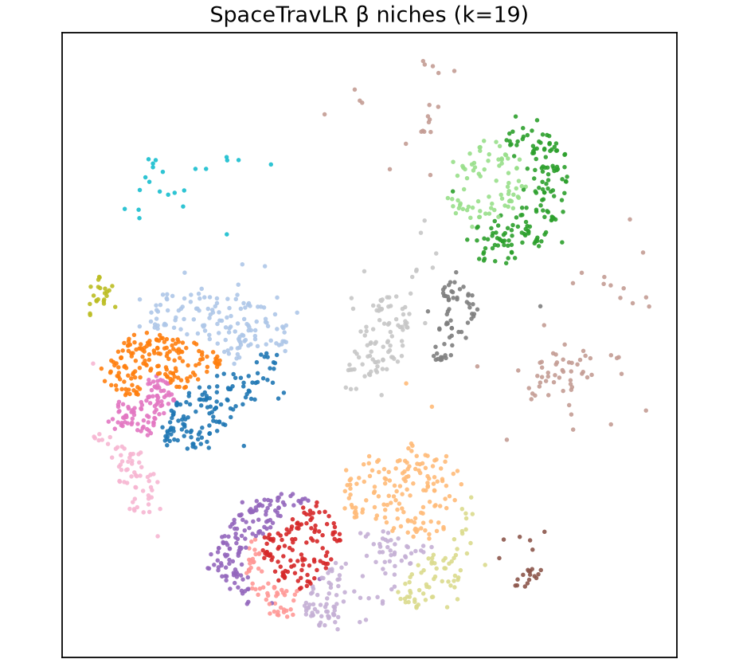
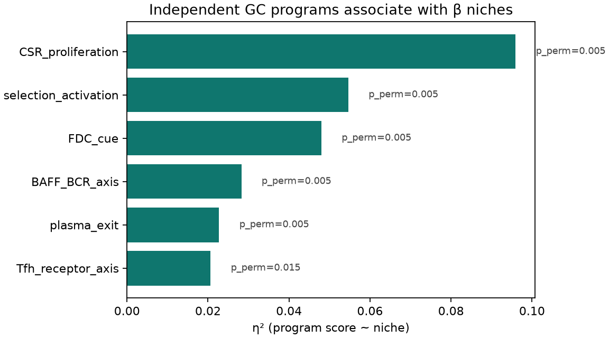
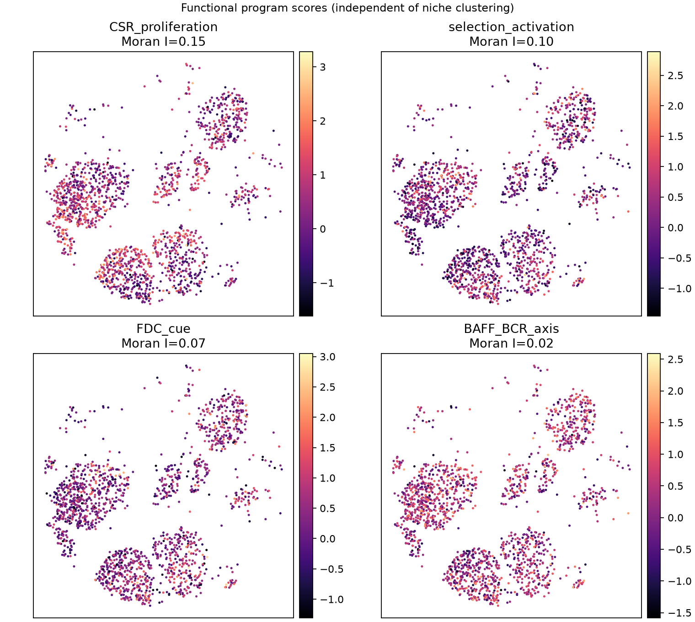
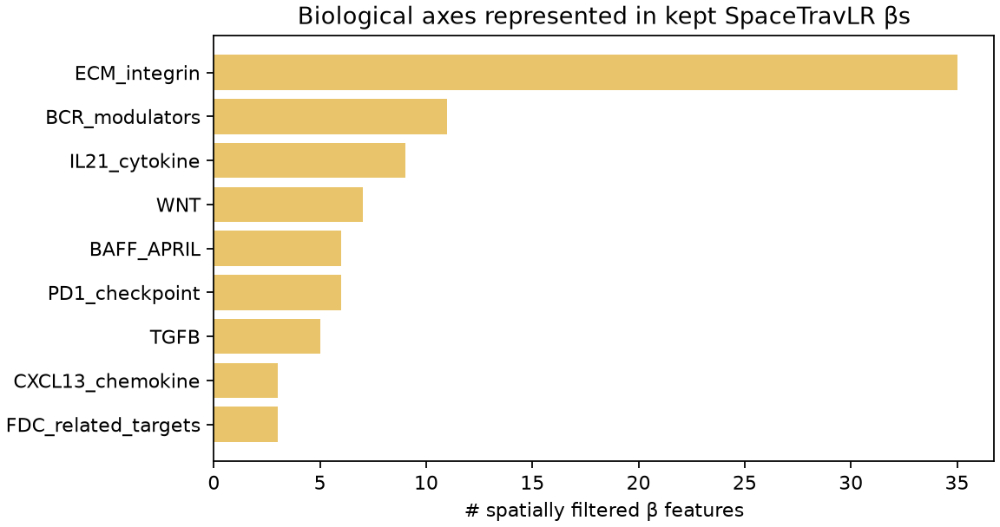

Tonsil GC · Functional proof
β niches are statistically stable and biologically specialized
SpaceTravLR β niches on human tonsil germinal-center B cells (n=1,848 · k=19), tested without treating expression-derived Light/Dark/Intermediate zones as ground truth.
Zone labels are expression-confounded and used only as a cautionary reference. Primary evidence is stability, spatial structure, independent programs, microenvironment contacts, and pathway enrichment.
1. Statistical evidence
- Stability. 80% cell bootstrap + re-Leiden on the β PCA latent recovers the original niches at mean ARI 0.81.
- Spatial contiguity. 92% of spatial kNN edges share a niche label (null ≈ 6.4%, permutation p = 0.005).
- Compactness. Within/between distance ratio = 0.19 (null ≈ 1.02, p = 0.005).
- Latent separation. Silhouette = 0.22 on the β PCA embedding.



2. Independent GC programs
Literature gene programs were scored after niche discovery (not used to cluster). Association is tested by ANOVA η² and label permutation.
| Program | η² | pperm |
|---|---|---|
| CSR / proliferation | 0.096 | 0.005 |
| Selection / activation | 0.055 | 0.005 |
| FDC cue | 0.048 | 0.005 |
| BAFF / BCR axis | 0.028 | 0.005 |
| Plasma exit | 0.023 | 0.005 |
| Tfh receptor axis | 0.021 | 0.015 |




3. Microenvironment contacts
For each GC cell, we measure the fraction of full-tissue spatial neighbors that are Tfh or FDC. Niche identity explains neighbor composition beyond chance.
| Neighbor type | η² | pperm | Mean frac. |
|---|---|---|---|
| B germinal center | 0.313 | 0.005 | 0.640 |
| T follicular helper | 0.296 | 0.005 | 0.081 |
| T CD4 | 0.154 | 0.005 | 0.032 |
| FDC | 0.086 | 0.005 | 0.051 |

4. Pathway enrichment from niche markers
Wilcoxon DE (niche vs rest, FDR < 0.05, logFC > 0.25) followed by Enrichr (GO Biological Process / Reactome).
| Niche | Term | Adj. p |
|---|---|---|
| 1 | Interferon Gamma Signaling | 8.5×10−13 |
| 1 | Interferon Signaling | 1.3×10−10 |
| 1 | Cytokine Signaling in Immune System | 5.0×10−9 |
| 1 | PD-1 Signaling | 1.4×10−8 |
| 1 | Antigen processing & presentation of endogenous peptide antigen | 1.9×10−8 |
| 1 | Positive regulation of T cell mediated cytotoxicity | 6.3×10−8 |

5. Kept β features encode immune axes
The 159 spatially filtered β features (Moran × η², FDR, decorrelated) concentrate on known GC pathways.

6. Takeaways
- β niches are stable, spatially contiguous, and compact versus label permutation.
- Independent GC programs associate with niches above chance, even though niches were not defined from those genes.
- Niches differ strongly in Tfh / FDC / T helper contact rates—distinct microenvironments.
- Marker-gene enrichment recovers antigen presentation, interferon/cytokine signaling, and PD-1 pathways.
- BANKSY scores higher on expression-program η² by design; SpaceTravLR preserves microniche geometry that BANKSY loses.